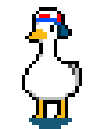
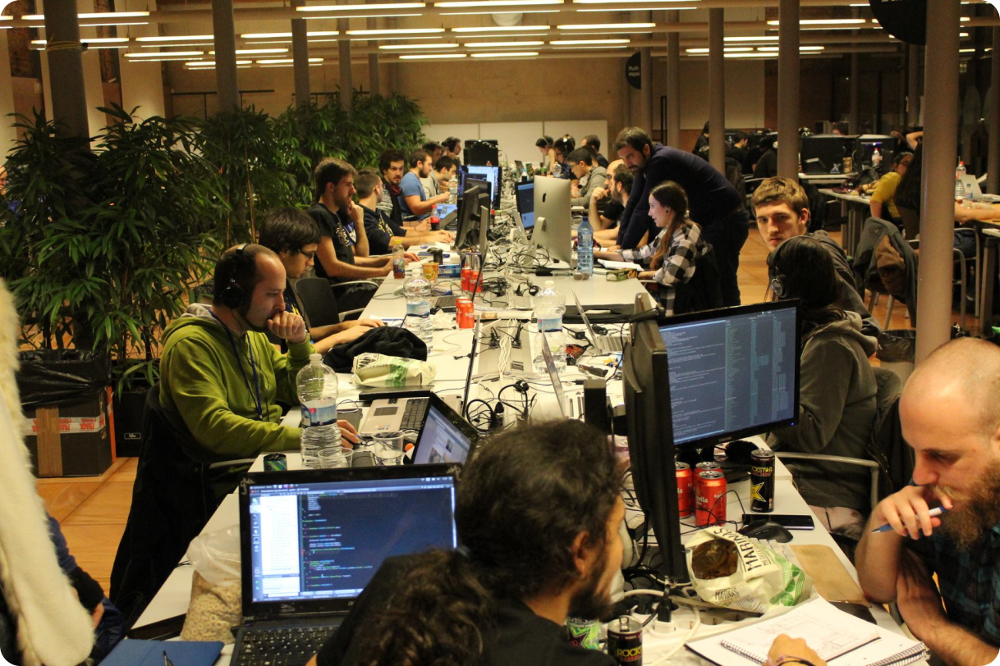

¿Qué es CESUGameJam?
Una Game Jam es un encuentro intenso y emocionante entre creadores de
videojuegos. Los participantes de una Game Jam se juntan en equipos
pequeños y trabajan para desarrollar un videojuego completo en un plazo
muy corto de tiempo.
Los objetivos de este encuentro son divertirse y crear juegos
experimentales que resulten originales e innovadores. La Global Game Jam
(GGJ) es un evento único en su especie: ¡nada menos que una Game Jam que
se celebra simultáneamente en todo el mundo durante la misma semana!
